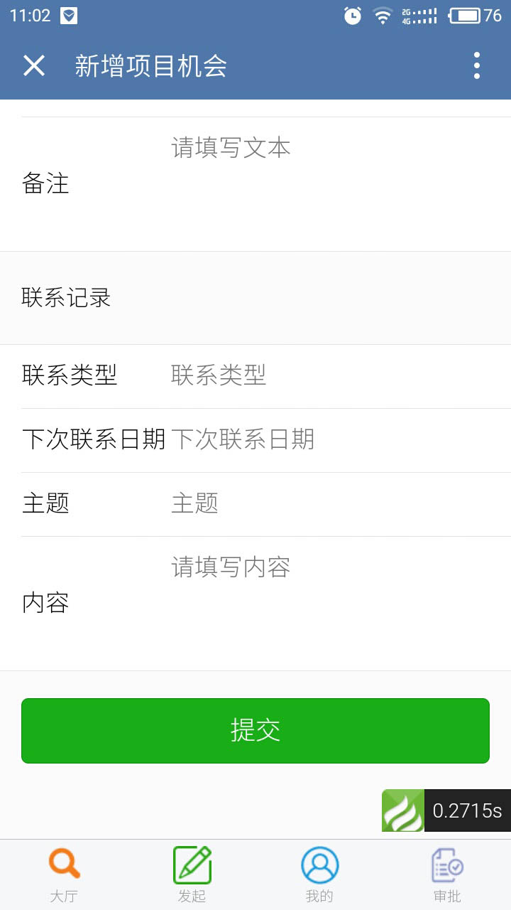
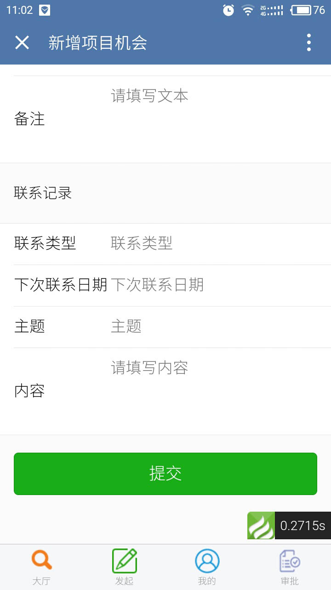
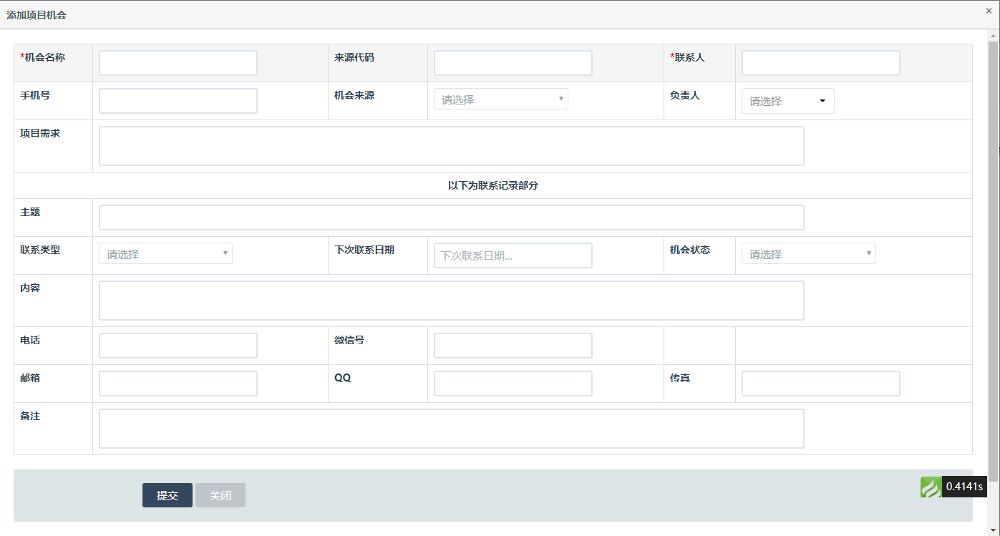
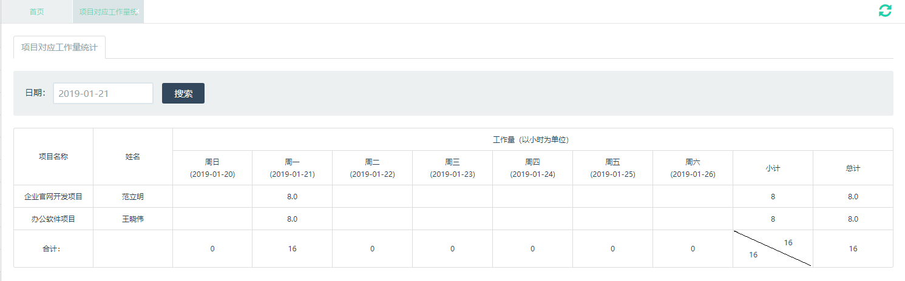
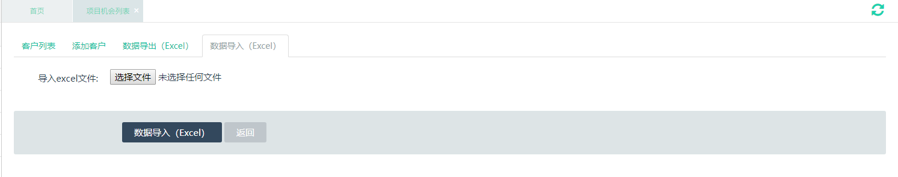
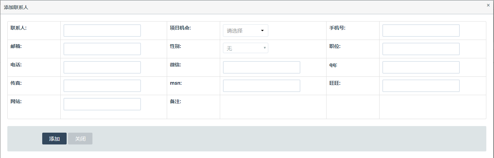
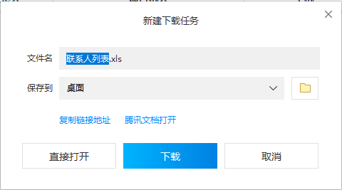
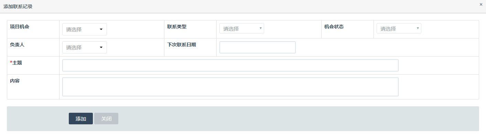
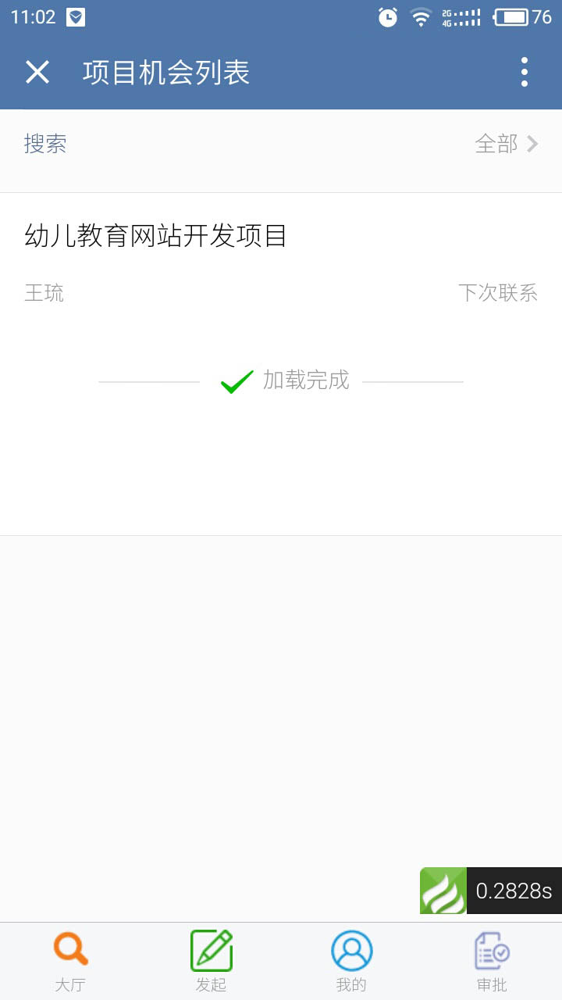

项目机会管理
添加参数
- 【后台】选择左侧项目机会管理-参数列表菜单，在参数列表中设置企业参数信息。参数列表中已有常用参数，如需要添加则在添加参数中添加企业部门参数信息，填写完成点击保存。
添加项目机会
- 【移动端】大厅-项目机会列表，打开记录详情，点击底部的添加联系人按钮，添加联系人填写完成点击添加。
 

- 【后台】选择左侧项目机会管理-联系人列表菜单，添加联系人填写完成点击添加。 
联系人查询
- 【移动端】大厅-项目机会列表，打开记录详情，点击联系人按钮，查询联系人信息。 
- 【后台】选择左侧项目机会管理-项目机会列表菜单，添加项目机会填写完成点击添加。
添加项目机会
- 【移动端】发起-添加项目机会，填写完成点击提交。
- 【后台】选择左侧项目机会管理-项目机会列表菜单，添加项目机会填写完成点击添加。 
项目机会查询
- 【移动端】大厅-项目记录列表， 
- 【后台】选择左侧项目机会管理-项目机会列表菜单，选择日期、项目机会、机会状态、机会来源及负责人进行查看。
项目机会导入
【后台】选择左侧【项目机会管理-联系人列表】菜单，【数据导出】导出当前列表的所有内容，可选择联系人及项目机会进行数据导出。
项目机会导出
- 【后台】选择左侧项目机会管理-项目机会列表菜单，使用数据导出，导出当前列表的所有内容，可选择日期、项目机会、机会状态、机会来源及负责人进行数据导出。
添加联系记录
- 【移动端】大厅-项目记录列表，打开记录详情，点击底部的添加联系记录按钮，添加联系记录填写完成点击添加。 
- 【后台】选择左侧项目机会管理-联系记录列表菜单，添加联系记录填写完成点击添加。
联系记录查询
添加来访人员记录
- 【移动端】选择发起-添加来访人员，填写完成点击提交。
- 【后台】选择左侧项目机会管理-来访人员记录列表，添加来访人员填写完成点击提交。
来访人员记录查询
- 【移动端】选择大厅-来访人员记录，选择来访者姓名及来访日期进行查询。
- 【后台】选择左侧项目机会管理-来访人员记录列表，选择来访者姓名、来访对象及来访日期进行查询。 